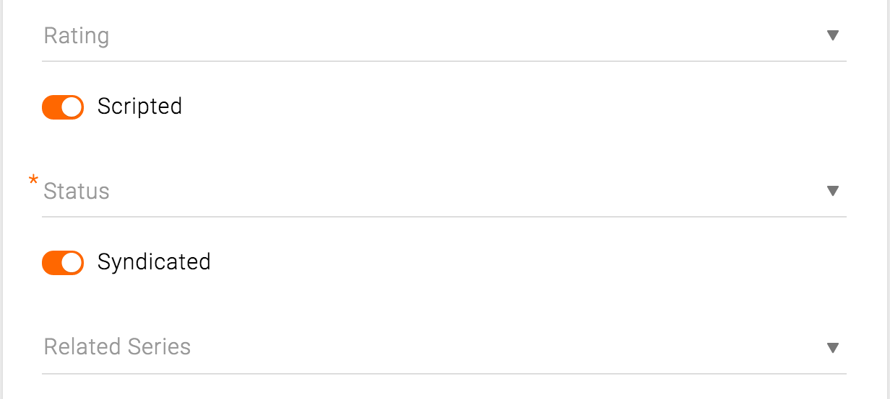

On/off switches toggle the state of a single settings option. The option that the switch controls, as well as the state it’s in, should be made clear from the corresponding inline label. The label should be positively worded so that the “on” state matches the “affirmative”.
Use cases: on/off toggle for Syndicated and Scripted

General info card on Series page